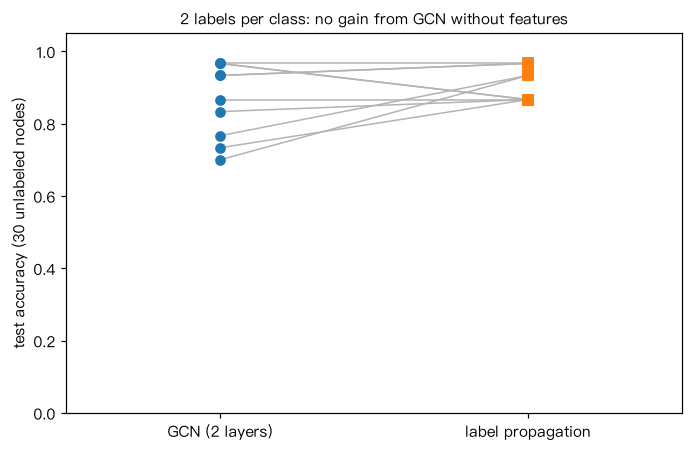

Example12 / 13
从零实现两层图卷积网络（GCN）做半监督节点分类，并与标签传播比较
传播矩阵 Â = D̃^{-1/2}(A + I)D̃^{-1/2}；模型 softmax(Â ReLU(Â X W1) W2)，X 取单位矩阵（无节点特征）。 只给每个俱乐部各 2 个已标注节点，用全批量梯度下降（手写反向传播）训练 200 步， 在其余 30 个节点上计算准确率；再与简单的标签传播（无参数）比较，并重复 10 个随机种子。 解读：在这个只有拓扑信息的小例子里，GCN 并不比标签传播更准——GCN 的优势通常来自丰富的节点特征。
Output输出图

Output文字输出
GCN 准确率：0.87 ± 0.10；标签传播：0.91 ± 0.04（10 个随机标注集）
Code代码
# 传播矩阵 Â = D̃^{-1/2}(A + I)D̃^{-1/2}；模型 softmax(Â ReLU(Â X W1) W2)，X 取单位矩阵（无节点特征）。
# 只给每个俱乐部各 2 个已标注节点，用全批量梯度下降（手写反向传播）训练 200 步，
# 在其余 30 个节点上计算准确率；再与简单的标签传播（无参数）比较，并重复 10 个随机种子。
# 解读：在这个只有拓扑信息的小例子里，GCN 并不比标签传播更准——GCN 的优势通常来自丰富的节点特征。
import numpy as np
import networkx as nx
G = nx.karate_club_graph()
n = G.number_of_nodes()
y = np.array([0 if G.nodes[v]["club"] == "Mr. Hi" else 1 for v in range(n)])
A = nx.to_numpy_array(G, nodelist=range(n)); A = (A > 0).astype(float)
At = A + np.eye(n); d = At.sum(1)
Ahat = At / np.sqrt(np.outer(d, d))
def train_gcn(labeled, seed, hidden=8, lr=0.2, epochs=200, wd=5e-4):
rng = np.random.default_rng(seed)
X = np.eye(n)
W1 = rng.normal(0, np.sqrt(2 / n), (n, hidden)); W2 = rng.normal(0, np.sqrt(2 / hidden), (hidden, 2))
Y = np.eye(2)[y]; mask = np.zeros(n); mask[labeled] = 1
AX = Ahat @ X
for _ in range(epochs):
Z1 = AX @ W1; H1 = np.maximum(Z1, 0); Z2 = Ahat @ H1 @ W2
P = np.exp(Z2 - Z2.max(1, keepdims=True)); P /= P.sum(1, keepdims=True)
G2 = (P - Y) * mask[:, None] / mask.sum() # dLoss/dZ2（只对已标注节点计损失）
gW2 = (Ahat @ H1).T @ G2 + wd * W2
G1 = (Ahat.T @ G2 @ W2.T) * (Z1 > 0)
gW1 = AX.T @ G1 + wd * W1
W1 -= lr * gW1; W2 -= lr * gW2
return P.argmax(1)
def label_propagation(labeled, alpha=0.9, iters=100):
F0 = np.zeros((n, 2)); F0[labeled, y[labeled]] = 1
S = A / np.sqrt(np.outer(A.sum(1), A.sum(1)))
F = F0.copy()
for _ in range(iters):
F = alpha * S @ F + (1 - alpha) * F0
return F.argmax(1)
acc_gcn, acc_lp = [], []
for seed in range(10):
rng = np.random.default_rng(seed)
labeled = np.concatenate([rng.choice(np.where(y == c)[0], 2, replace=False) for c in (0, 1)])
test = np.setdiff1d(np.arange(n), labeled)
acc_gcn.append(np.mean(train_gcn(labeled, seed)[test] == y[test]))
acc_lp.append(np.mean(label_propagation(labeled)[test] == y[test]))
print(f"GCN 准确率：{np.mean(acc_gcn):.2f} ± {np.std(acc_gcn):.2f}；"
f"标签传播：{np.mean(acc_lp):.2f} ± {np.std(acc_lp):.2f}（10 个随机标注集）")
# 作图：同一标注集下两种方法的准确率（连线配对）
import matplotlib.pyplot as plt
fig, ax = plt.subplots(figsize=(6.4, 4.2))
for a_, b_ in zip(acc_gcn, acc_lp):
ax.plot([0, 1], [a_, b_], "-", color="0.7", lw=1)
ax.plot(np.zeros(10), acc_gcn, "o", color="C0", label="GCN")
ax.plot(np.ones(10), acc_lp, "s", color="C1", label="label propagation")
ax.set_xticks([0, 1]); ax.set_xticklabels(["GCN (2 layers)", "label propagation"]); ax.set_xlim(-0.5, 1.5)
ax.set_ylabel("test accuracy (30 unlabeled nodes)"); ax.set_ylim(0, 1.05)
ax.set_title("2 labels per class: no gain from GCN without features", fontsize=10)
plt.tight_layout(); plt.show()Run在浏览器中运行
首次加载 Python 环境约需 20–40 秒；可以修改参数后重新运行。